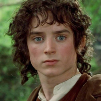

Frodo Baggins Personality Statistics
Statistics for the character of Frodo Baggins from Lord of the Rings, courtesy of the Open-Source Psychometrics Project. Open-Source Psychometrics
Full Personality Trait List
| Personality Traits | Average Rating | Rank |
|---|---|---|
| short (not tall) | 94.1 | 3 |
| kind (not cruel) | 85.4 | 99 |
| heroic (not villainous) | 84 | 121 |
| genuine (not sarcastic) | 83.5 | 40 |
| loyal (not traitorous) | 83 | 193 |
| civilized (not barbaric) | 82.9 | 103 |
| diligent (not lazy) | 80.9 | 281 |
| human (not animalistic) | 80.8 | 104 |
| literary (not mathematical) | 80.4 | 18 |
| confidential (not gossiping) | 80.4 | 132 |
| respectful (not rude) | 79.5 | 102 |
| tasteful (not lewd) | 79.3 | 86 |
| quiet (not loud) | 78.5 | 59 |
| pure (not debased) | 78.5 | 76 |
| forgiving (not vengeful) | 78.3 | 58 |
| soulful (not soulless) | 77.9 | 200 |
| nerd (not jock) | 77.9 | 129 |
| low-tech (not high-tech) | 77.5 | 75 |
| tense (not relaxed) | 76.6 | 162 |
| honorable (not cunning) | 76.3 | 116 |
| bookish (not sporty) | 76.3 | 162 |
| modest (not flamboyant) | 76.2 | 90 |
| young (not old) | 76.1 | 143 |
| child free (not pronatalist) | 75.8 | 125 |
| provincial (not cosmopolitan) | 75.7 | 67 |
| altruistic (not selfish) | 75.2 | 136 |
| open to new experinces (not uncreative) | 75.2 | 163 |
| explorer (not builder) | 75.2 | 64 |
| curious (not apathetic) | 75 | 122 |
| cooperative (not competitive) | 74.5 | 68 |
| vanilla (not kinky) | 74.5 | 73 |
| humble (not arrogant) | 74.2 | 94 |
| angelic (not demonic) | 74 | 135 |
| pacifist (not ferocious) | 73.5 | 62 |
| chaste (not lustful) | 73.5 | 55 |
| mild (not spicy) | 73.4 | 61 |
| active (not slothful) | 73.2 | 278 |
| warm (not quarrelsome) | 72.4 | 92 |
| driven (not unambitious) | 72.4 | 358 |
| beautiful (not ugly) | 72.4 | 253 |
| reserved (not chatty) | 72.3 | 127 |
| domestic (not industrial) | 72.1 | 58 |
| emotional (not logical) | 71.9 | 131 |
| devout (not heathen) | 71.9 | 121 |
| adventurous (not stick-in-the-mud) | 71.8 | 158 |
| accepting (not judgemental) | 71.2 | 99 |
| brave (not careful) | 71.2 | 167 |
| sheltered (not street-smart) | 71.2 | 84 |
| vulnerable (not armoured) | 71.1 | 61 |
| intellectual (not physical) | 70.8 | 212 |
| prestigious (not disreputable) | 70.6 | 178 |
| complimentary (not insulting) | 70.2 | 127 |
| trusting (not charming) | 69.8 | 45 |
| works hard (not plays hard) | 69.7 | 273 |
| private (not gregarious) | 69.5 | 188 |
| demure (not vain) | 69.5 | 110 |
| democratic (not authoritarian) | 69 | 142 |
| nonpolitical (not political) | 68.7 | 80 |
| open-minded (not close-minded) | 68.7 | 154 |
| obsessed (not aloof) | 68.6 | 171 |
| sensible (not ludicrous) | 68.5 | 208 |
| good-humored (not angry) | 68.4 | 192 |
| nurturing (not poisonous) | 68.3 | 238 |
| innocent (not worldly) | 68.2 | 71 |
| warm (not cold) | 67.9 | 190 |
| attractive (not repulsive) | 67.7 | 313 |
| frugal (not lavish) | 67.6 | 194 |
| disarming (not creepy) | 67.5 | 288 |
| sensitive (not thick-skinned) | 67.4 | 136 |
| introvert (not extrovert) | 67.3 | 108 |
| thin (not thick) | 67.1 | 177 |
| soft (not hard) | 67.1 | 144 |
| serious (not playful) | 67 | 268 |
| proper (not scandalous) | 66.8 | 177 |
| inspiring (not cringeworthy) | 66.6 | 186 |
| sweet (not bitter) | 66.6 | 169 |
| luddite (not technophile) | 66.4 | 153 |
| smooth (not rough) | 66.3 | 138 |
| guarded (not open) | 66.2 | 323 |
| trusting (not suspicious) | 65.3 | 116 |
| high IQ (not low IQ) | 65.1 | 413 |
| soft (not hard) | 64.9 | 162 |
| moody (not stable) | 64.7 | 266 |
| historical (not modern) | 64.5 | 155 |
| apprentice (not master) | 64.5 | 114 |
| anxious (not calm) | 64.4 | 203 |
| insecure (not confident) | 64.2 | 92 |
| self-conscious (not self-assured) | 64.1 | 68 |
| gracious (not feisty) | 64.1 | 72 |
| meek (not bossy) | 63.7 | 102 |
| existentialist (not nihilist) | 63.7 | 203 |
| workaholic (not slacker) | 63.5 | 392 |
| submissive (not dominant) | 63.4 | 122 |
| moderate (not extreme) | 63.4 | 111 |
| charismatic (not uninspiring) | 63.4 | 358 |
| artistic (not scientific) | 63.3 | 164 |
| self-disciplined (not disorganized) | 63.1 | 374 |
| tame (not wild) | 63.1 | 149 |
| codependent (not independent) | 62.8 | 149 |
| outsider (not insider) | 62.7 | 230 |
| morning lark (not night owl) | 62.7 | 135 |
| socialist (not libertarian) | 62.4 | 35 |
| competent (not incompetent) | 62.4 | 426 |
| equitable (not hypocritical) | 62.3 | 242 |
| sober (not indulgent) | 62.1 | 209 |
| unprepared (not hoarder) | 62.1 | 103 |
| politically correct (not edgy) | 61.9 | 126 |
| sorrowful (not cheery) | 61.7 | 272 |
| well behaved (not mischievous) | 61.4 | 165 |
| compersive (not jealous) | 60.8 | 198 |
| unambiguous (not mysterious) | 60.8 | 249 |
| classical (not avant-garde) | 60.7 | 238 |
| neat (not messy) | 60.6 | 323 |
| lenient (not strict) | 60.5 | 198 |
| refined (not rugged) | 60.5 | 274 |
| involved (not remote) | 60.4 | 366 |
| instinctual (not reasoned) | 60.3 | 261 |
| dramatic (not no-nonsense) | 60.2 | 220 |
| extraordinary (not mundane) | 60.1 | 346 |
| queer (not straight) | 58.9 | 53 |
| neurotypical (not autistic) | 58.8 | 433 |
| complicated (not simple) | 58.7 | 327 |
| sad (not happy) | 58.6 | 305 |
| focused on the future (not focused on the present) | 58.3 | 161 |
| shy (not playful) | 58.2 | 111 |
| straightforward (not cryptic) | 58.1 | 376 |
| beta (not alpha) | 58 | 188 |
| orderly (not chaotic) | 57.8 | 299 |
| depressed (not bright) | 57.8 | 199 |
| hesitant (not decisive) | 57.6 | 120 |
| repetitive (not varied) | 57.6 | 307 |
| patient (not impatient) | 57.5 | 187 |
| idealist (not realist) | 57.4 | 235 |
| captain (not first-mate) | 57.3 | 248 |
| basic (not hipster) | 56.8 | 364 |
| blue-collar (not ivory-tower) | 56.7 | 296 |
| utilitarian (not decorative) | 56.7 | 367 |
| flexible (not rigid) | 56.5 | 189 |
| head@clouds (not down2earth) | 56.4 | 228 |
| androgynous (not gendered) | 56.3 | 36 |
| hurried (not leisurely) | 56.2 | 277 |
| awkward (not charming) | 55.6 | 201 |
| astonishing (not methodical) | 55.6 | 175 |
| rich (not poor) | 55.6 | 313 |
| wise (not foolish) | 55.5 | 309 |
| cautious (not impulsive) | 55.4 | 285 |
| deliberate (not spontaneous) | 55.4 | 400 |
| eloquent (not unpolished) | 55.4 | 343 |
| mature (not juvenile) | 55.3 | 323 |
| proletariat (not bourgeoisie) | 55.2 | 308 |
| direct (not roundabout) | 55 | 406 |
| clumsy (not coordinated) | 55 | 175 |
| generalist (not specialist) | 54.8 | 156 |
| family-first (not work-first) | 54.7 | 267 |
| expressive (not stoic) | 54.6 | 329 |
| sheriff (not outlaw) | 54.5 | 287 |
| subjective (not objective) | 54.5 | 312 |
| interesting (not tiresome) | 54.4 | 413 |
| manicured (not scruffy) | 54.4 | 390 |
| orange (not purple) | 54.3 | 258 |
| theist (not atheist) | 54.2 | 213 |
| resourceful (not helpless) | 54 | 510 |
| stylish (not slovenly) | 53.9 | 392 |
| awkward (not suspicious) | 53.8 | 181 |
| multicolored (not monochrome) | 53.7 | 276 |
| spiritual (not skeptical) | 53.6 | 152 |
| weird (not normal) | 53.5 | 360 |
| highbrow (not lowbrow) | 53.5 | 358 |
| optimistic (not pessimistic) | 53.5 | 280 |
| fortunate (not unlucky) | 53.4 | 275 |
| genius (not dunce) | 53.3 | 426 |
| humorless (not funny) | 53.3 | 234 |
| sheeple (not conspiracist) | 53.3 | 161 |
| feminine (not masculine) | 53.2 | 231 |
| rational (not whimsical) | 53.2 | 376 |
| arcane (not mainstream) | 53.2 | 332 |
| obedient (not rebellious) | 53.1 | 197 |
| serious (not bold) | 53 | 237 |
| bold (not shy) | 52.9 | 545 |
| unorthodox (not traditional) | 52.8 | 339 |
| average (not deviant) | 52.6 | 208 |
| spontaneous (not scheduled) | 52.5 | 241 |
| puny (not mighty) | 52.5 | 164 |
| resistant (not resigned) | 52.5 | 507 |
| creative (not conventional) | 52.4 | 324 |
| passive (not assertive) | 52.3 | 159 |
| philosophical (not real) | 52.1 | 151 |
| slow (not fast) | 51.8 | 176 |
| biased (not impartial) | 51.7 | 493 |
| scholarly (not crafty) | 51.3 | 202 |
| backdoor (not official) | 51.2 | 379 |
| practical (not imaginative) | 51.1 | 416 |
| theoretical (not empirical) | 51 | 162 |
| vague (not precise) | 50.8 | 206 |
| healthy (not sickly) | 50.7 | 500 |
| metaphorical (not literal) | 50.5 | 191 |
| enslaved (not emancipated) | 50.5 | 182 |
| communal (not individualist) | 50.4 | 265 |
| transient (not permanent) | 50.1 | 287 |
| 'right-brained' (not 'left-brained') | 50 | 286 |
Top Five Most and Least Similar Characters
| Most Similar Characters | Least Similar Characters |
|---|---|
| 1. Peeta Mellark (0.776) | 1. Sheriff of Nottingham (-0.629) |
| 2. Beth March (0.757) | 2. Sal Maroni (-0.621) |
| 3. Nick Carraway (0.749) | 3. Tom Buchanan (-0.552) |
| 4. George O'Malley (0.737) | 4. Clay Davis (-0.525) |
| 5. Georgiana Darcy (0.717) | 5. Logan Delos (-0.524) |
Full Personality Match List
| Full Match List | Universe | % Match |
|---|---|---|
| 1. Frodo Baggins | Lord of the Rings | 100% |
| 2. Matt Saracen | Friday Night Lights | 92% |
| 3. Peeta Mellark | The Hunger Games | 90% |
| 4. Nick Carraway | The Great Gatsby | 90% |
| 5. George O'Malley | Grey's Anatomy | 88% |
| 6. Roland 'Prez' Pryzbylewski | The Wire | 87% |
| 7. George Michael Bluth | Arrested Development | 87% |
| 8. Samwell Tarly | Game of Thrones | 86% |
| 9. Friar Laurence | Romeo and Juliet | 86% |
| 10. Flynn White | Breaking Bad | 85% |
| 11. Samwise Gamgee | Lord of the Rings | 85% |
| 12. Molly Hooper | Sherlock | 85% |
| 13. Evan | Superbad | 85% |
| 14. Bella Swan | Twilight | 85% |
| 15. Sun-Hwa Kwon | LOST | 84% |
| 16. William Mason | Downton Abbey | 84% |
| 17. Beatrice 'Beadie' Russell | The Wire | 84% |
| 18. Felix Lutz | Westworld | 84% |
| 19. Dr. John Watson | Sherlock | 84% |
| 20. Jared Dunn | Silicon Valley | 84% |
| 21. Ms. Sharon Norbury | Mean Girls | 84% |
| 22. Beth March | Little Women | 84% |
| 23. Landry Clarke | Friday Night Lights | 84% |
| 24. Milhouse Van Houten | The Simpsons | 83% |
| 25. Anna Bates | Downton Abbey | 83% |
| 26. Dale Horvath | The Walking Dead | 83% |
| 27. Billy Keikeya | Battlestar Galactica | 83% |
| 28. Betsy Heron | Mean Girls | 83% |
| 29. Marmee March | Little Women | 83% |
| 30. Jon Snow | Game of Thrones | 82% |
| 31. Davos Seaworth | Game of Thrones | 82% |
| 32. Katara | Avatar The Last Airbender | 82% |
| 33. Marge Simpson | The Simpsons | 82% |
| 34. Daniel Jackson | Stargate SG-1 | 82% |
| 35. Ariadne | Inception | 82% |
| 36. Walter 'Radar' O'Reilly | M*A*S*H | 82% |
| 37. Brandon Stark | Game of Thrones | 81% |
| 38. Remus Lupin | Harry Potter | 81% |
| 39. Dobby | Harry Potter | 81% |
| 40. Jane Bennet | Pride and Prejudice | 81% |
| 41. Waylon Smithers | The Simpsons | 81% |
| 42. Stuart Bloom | The Big Bang Theory | 81% |
| 43. Rita Bennett | Dexter | 81% |
| 44. Alan Harper | Two and Half Men | 81% |
| 45. Timothy McGee | NCIS | 81% |
| 46. Kate Pearson | This Is Us | 81% |
| 47. Jorah Mormont | Game of Thrones | 80% |
| 48. Catelyn Stark | Game of Thrones | 80% |
| 49. Eric Forman | That 70's Show | 80% |
| 50. Lady Edith Crawley | Downton Abbey | 80% |
| 51. Derrial Book | Firefly + Serenity | 80% |
| 52. Glenn Rhee | The Walking Dead | 80% |
| 53. D'Angelo Barksdale | The Wire | 80% |
| 54. Bernard Lowe | Westworld | 80% |
| 55. The Nurse | Romeo and Juliet | 80% |
| 56. Francis Mulcahy | M*A*S*H | 80% |
| 57. Eddard Stark | Game of Thrones | 79% |
| 58. Obi-Wan Kenobi | Star Wars | 79% |
| 59. The Narrator | Fight Club | 79% |
| 60. James Gordon | The Dark Knight | 79% |
| 61. Meg March | Little Women | 79% |
| 62. Rebecca Pearson | This Is Us | 79% |
| 63. Ginny Weasley | Harry Potter | 78% |
| 64. Pam Beesly | The Office | 78% |
| 65. Bruce Banner | Marvel Cinematic Universe | 78% |
| 66. C-3PO | Star Wars | 78% |
| 67. Ann Perkins | Parks and Recreation | 78% |
| 68. Carl Grimes | The Walking Dead | 78% |
| 69. Alfred Pennyworth | The Dark Knight | 78% |
| 70. Willow Rosenberg | Buffy the Vampire Slayer | 78% |
| 71. Rachel Chu | Crazy Rich Asians | 78% |
| 72. Friar Tuck | Robin Hood | 78% |
| 73. Elsie Carson | Downton Abbey | 77% |
| 74. Leonard Hofstadter | The Big Bang Theory | 77% |
| 75. Rachel Dawes | The Dark Knight | 77% |
| 76. Ilsa Lund | Casablanca | 77% |
| 77. Rupert Giles | Buffy the Vampire Slayer | 77% |
| 78. James Hurley | Twin Peaks | 77% |
| 79. Peter | The Room | 77% |
| 80. Charlie Swan | Twilight | 77% |
| 81. Wyatt Langmore | Ozark | 77% |
| 82. Cho Chang | Harry Potter | 76% |
| 83. Filius Flitwick | Harry Potter | 76% |
| 84. John Bates | Downton Abbey | 76% |
| 85. Simon Tam | Firefly + Serenity | 76% |
| 86. Teddy Flood | Westworld | 76% |
| 87. Norma Jennings | Twin Peaks | 76% |
| 88. Jimmy Palmer | NCIS | 76% |
| 89. Jonah Byrde | Ozark | 76% |
| 90. Charlie Young | The West Wing | 75% |
| 91. Captain America | Marvel Cinematic Universe | 75% |
| 92. Lisa Simpson | The Simpsons | 75% |
| 93. Ned Flanders | The Simpsons | 75% |
| 94. Luke Skywalker | Star Wars | 75% |
| 95. Elsie Hughes | Westworld | 75% |
| 96. Laura Roslin | Battlestar Galactica | 75% |
| 97. Peggy Olson | Mad Men | 75% |
| 98. Mrs. Hudson | Sherlock | 75% |
| 99. Richard Hendricks | Silicon Valley | 75% |
| 100. Ed Hurley | Twin Peaks | 75% |
| 101. Jasper Hale | Twilight | 75% |
| 102. Miguel Rivas | This Is Us | 75% |
| 103. Donna Moss | The West Wing | 74% |
| 104. Georgiana Darcy | Pride and Prejudice | 74% |
| 105. Claire Littleton | LOST | 74% |
| 106. Lane Pryce | Mad Men | 74% |
| 107. Pete Martell | Twin Peaks | 74% |
| 108. Lambert | Alien | 74% |
| 109. Woody | Toy Story | 74% |
| 110. Esme Cullen | Twilight | 74% |
| 111. Michael Bluth | Arrested Development | 74% |
| 112. Brienne of Tarth | Game of Thrones | 73% |
| 113. Arthur Weasley | Harry Potter | 73% |
| 114. Phyllis Lapin | The Office | 73% |
| 115. Odo | Star Trek Deep Space Nine | 73% |
| 116. Jake Sisko | Star Trek Deep Space Nine | 73% |
| 117. Amy Farrah Fowler | The Big Bang Theory | 73% |
| 118. Charlotte York | Sex and the City | 73% |
| 119. Steve Brady | Sex and the City | 73% |
| 120. Felix Gaeta | Battlestar Galactica | 73% |
| 121. Anastasia Dualla | Battlestar Galactica | 73% |
| 122. Will Turner | Pirates of the Caribbean | 73% |
| 123. John Munch | Law & Order SVU | 73% |
| 124. Charles Boyle | Brooklyn Nine-Nine | 73% |
| 125. Helen Seinfeld | Seinfeld | 73% |
| 126. Harry Potter | Harry Potter | 72% |
| 127. Minerva McGonagall | Harry Potter | 72% |
| 128. Apu Nahasapeemapetilon | The Simpsons | 72% |
| 129. Charlie Carson | Downton Abbey | 72% |
| 130. Maggie Hart | True Detective | 72% |
| 131. Annie Edison | Community | 72% |
| 132. Dennis 'Cutty' Wise | The Wire | 72% |
| 133. Dr. Ellie Sattler | Jurassic Park | 72% |
| 134. D.I. Greg Lestrade | Sherlock | 72% |
| 135. Donald Cragen | Law & Order SVU | 72% |
| 136. Sheriff Truman | Twin Peaks | 72% |
| 137. Neo | The Matrix | 72% |
| 138. Jason Street | Friday Night Lights | 72% |
| 139. Amy Santiago | Brooklyn Nine-Nine | 72% |
| 140. Toby Ziegler | The West Wing | 71% |
| 141. Hakoda | Avatar The Last Airbender | 71% |
| 142. Rom | Star Trek Deep Space Nine | 71% |
| 143. Kitty Forman | That 70's Show | 71% |
| 144. Principal Skinner | The Simpsons | 71% |
| 145. Carol Peletier | The Walking Dead | 71% |
| 146. William Adama | Battlestar Galactica | 71% |
| 147. Cally Henderson | Battlestar Galactica | 71% |
| 148. Julia | Cowboy Bebop | 71% |
| 149. Dana Scully | The X-Files | 71% |
| 150. Raymond Holt | Brooklyn Nine-Nine | 71% |
| 151. Donald Mallard | NCIS | 71% |
| 152. William H. 'Shakespeare' Hill | This Is Us | 71% |
| 153. Sansa Stark | Game of Thrones | 70% |
| 154. Ross Geller | Friends | 70% |
| 155. Peggy Carter | Marvel Cinematic Universe | 70% |
| 156. Aragorn | Lord of the Rings | 70% |
| 157. Daisy Mason | Downton Abbey | 70% |
| 158. Dr. Alan Grant | Jurassic Park | 70% |
| 159. Dale Cooper | Twin Peaks | 70% |
| 160. Janet Fraiser | Stargate SG-1 | 70% |
| 161. Maid Marian | Robin Hood | 70% |
| 162. Arthur | Inception | 70% |
| 163. Hermione Granger | Harry Potter | 69% |
| 164. Mr. Darcy | Pride and Prejudice | 69% |
| 165. Richard Webber | Grey's Anatomy | 69% |
| 166. Mufasa | The Lion King | 69% |
| 167. Ken Cosgrove | Mad Men | 69% |
| 168. Olivia Benson | Law & Order SVU | 69% |
| 169. Teal'c | Stargate SG-1 | 69% |
| 170. Carlisle Cullen | Twilight | 69% |
| 171. Sophie | This Is Us | 69% |
| 172. Hugo 'Hurley' Reyes | LOST | 68% |
| 173. Shirley Bennett | Community | 68% |
| 174. Victor Laszlo | Casablanca | 68% |
| 175. Benvolio | Romeo and Juliet | 68% |
| 176. Samantha Carter | Stargate SG-1 | 68% |
| 177. Randall Pearson | This Is Us | 68% |
| 178. Molly Weasley | Harry Potter | 67% |
| 179. Josiah Bartlet | The West Wing | 67% |
| 180. Mr. William Collins | Pride and Prejudice | 67% |
| 181. Iroh | Avatar The Last Airbender | 67% |
| 182. Desmond Hume | LOST | 67% |
| 183. Raj Koothrappali | The Big Bang Theory | 67% |
| 184. Lucius Fox | The Dark Knight | 67% |
| 185. Shelly Johnson | Twin Peaks | 67% |
| 186. Donna Hayward | Twin Peaks | 67% |
| 187. George S. Hammond | Stargate SG-1 | 67% |
| 188. Terry Jeffords | Brooklyn Nine-Nine | 67% |
| 189. Rachel Garrison | Ozark | 67% |
| 190. Severus Snape | Harry Potter | 66% |
| 191. Kelly Erin Hannon | The Office | 66% |
| 192. Leo McGarry | The West Wing | 66% |
| 193. Jin-Soo Kwon | LOST | 66% |
| 194. Benjamin Sisko | Star Trek Deep Space Nine | 66% |
| 195. Gandalf | Lord of the Rings | 66% |
| 196. Mark Brendanawicz | Parks and Recreation | 66% |
| 197. Abed Nadir | Community | 66% |
| 198. Lester Freamon | The Wire | 66% |
| 199. Norman Wilson | The Wire | 66% |
| 200. Karl 'Helo' Agathon | Battlestar Galactica | 66% |
| 201. The Oracle | The Matrix | 66% |
| 202. Cady Heron | Mean Girls | 66% |
| 203. Bo Peep | Toy Story | 66% |
| 204. Julie Taylor | Friday Night Lights | 66% |
| 205. Edward Cullen | Twilight | 66% |
| 206. Ron Weasley | Harry Potter | 65% |
| 207. Elizabeth Bennet | Pride and Prejudice | 65% |
| 208. Aang | Avatar The Last Airbender | 65% |
| 209. Nog | Star Trek Deep Space Nine | 65% |
| 210. Meredith Grey | Grey's Anatomy | 65% |
| 211. Skyler White | Breaking Bad | 65% |
| 212. Legolas | Lord of the Rings | 65% |
| 213. Beryl Patmore | Downton Abbey | 65% |
| 214. Mary Cooper | The Big Bang Theory | 65% |
| 215. Lori Grimes | The Walking Dead | 65% |
| 216. Katniss Everdeen | The Hunger Games | 65% |
| 217. Nala | The Lion King | 65% |
| 218. Galen Tyrol | Battlestar Galactica | 65% |
| 219. Joshamee Gibbs | Pirates of the Caribbean | 65% |
| 220. Melinda Warner | Law & Order SVU | 65% |
| 221. Eric Taylor | Friday Night Lights | 65% |
| 222. Leroy Jethro Gibbs | NCIS | 65% |
| 223. Jack Pearson | This Is Us | 65% |
| 224. Buster Bluth | Arrested Development | 65% |
| 225. C. J. Cregg | The West Wing | 64% |
| 226. Jack Shephard | LOST | 64% |
| 227. Miranda Bailey | Grey's Anatomy | 64% |
| 228. Princess Leia | Star Wars | 64% |
| 229. Cora Crawley, Countess of Grantham | Downton Abbey | 64% |
| 230. Harry Morgan | Dexter | 64% |
| 231. Cedric Daniels | The Wire | 64% |
| 232. Reginald 'Bubbles' Cousins | The Wire | 64% |
| 233. Akecheta | Westworld | 64% |
| 234. Harry Crane | Mad Men | 64% |
| 235. Henry Francis | Mad Men | 64% |
| 236. Walter Skinner | The X-Files | 64% |
| 237. Rex | Toy Story | 64% |
| 238. Tami Taylor | Friday Night Lights | 64% |
| 239. Robb Stark | Game of Thrones | 63% |
| 240. Albus Dumbledore | Harry Potter | 63% |
| 241. Fleur Delacour | Harry Potter | 63% |
| 242. Charles Bingley | Pride and Prejudice | 63% |
| 243. Black Panther | Marvel Cinematic Universe | 63% |
| 244. Rick Grimes | The Walking Dead | 63% |
| 245. Miranda Hobbes | Sex and the City | 63% |
| 246. Michael Lee | The Wire | 63% |
| 247. Lucy Moran | Twin Peaks | 63% |
| 248. Jet Black | Cowboy Bebop | 63% |
| 249. Trinity | The Matrix | 63% |
| 250. Juliet Capulet | Romeo and Juliet | 63% |
| 251. Ellen Ripley | Alien | 63% |
| 252. Sam Healy | Orange is the New Black | 63% |
| 253. Beth Pearson | This Is Us | 63% |
| 254. Charlotte Byrde | Ozark | 63% |
| 255. Rubeus Hagrid | Harry Potter | 62% |
| 256. Luna Lovegood | Harry Potter | 62% |
| 257. Chandler Bing | Friends | 62% |
| 258. Worf | Star Trek Deep Space Nine | 62% |
| 259. Miles O'Brien | Star Trek Deep Space Nine | 62% |
| 260. Robert Crawley, 7th Earl of Grantham | Downton Abbey | 62% |
| 261. Leslie Knope | Parks and Recreation | 62% |
| 262. Nick Young | Crazy Rich Asians | 62% |
| 263. Astrid Leong-Teo | Crazy Rich Asians | 62% |
| 264. Becca | Superbad | 62% |
| 265. Robert Fischer | Inception | 62% |
| 266. Morty Seinfeld | Seinfeld | 62% |
| 267. Marty Byrde | Ozark | 62% |
| 268. Juliet Burke | LOST | 61% |
| 269. Daryl Dixon | The Walking Dead | 61% |
| 270. Gale Hawthorne | The Hunger Games | 61% |
| 271. Angel | Buffy the Vampire Slayer | 61% |
| 272. Peter Gregory | Silicon Valley | 61% |
| 273. Monica Hall | Silicon Valley | 61% |
| 274. Little John | Robin Hood | 61% |
| 275. Angela Martin | The Office | 60% |
| 276. Sam Seaborn | The West Wing | 60% |
| 277. Sayid Jarrah | LOST | 60% |
| 278. Julian Bashir | Star Trek Deep Space Nine | 60% |
| 279. Kasidy Yates | Star Trek Deep Space Nine | 60% |
| 280. Dr. Strange | Marvel Cinematic Universe | 60% |
| 281. Ron Swanson | Parks and Recreation | 60% |
| 282. Kima Greggs | The Wire | 60% |
| 283. Frank Sobotka | The Wire | 60% |
| 284. Clementine Pennyfeather | Westworld | 60% |
| 285. Ray Arnold | Jurassic Park | 60% |
| 286. James Norrington | Pirates of the Caribbean | 60% |
| 287. Nelson Bighetti | Silicon Valley | 60% |
| 288. Morpheus | The Matrix | 60% |
| 289. Tobias Funke | Arrested Development | 60% |
| 290. Stanley Hudson | The Office | 59% |
| 291. Kira Nerys | Star Trek Deep Space Nine | 59% |
| 292. Rust Cohle | True Detective | 59% |
| 293. Lee 'Apollo' Adama | Battlestar Galactica | 59% |
| 294. Varys | Game of Thrones | 58% |
| 295. Monica Geller | Friends | 58% |
| 296. Joey Lucas | The West Wing | 58% |
| 297. Donna Pinciotti | That 70's Show | 58% |
| 298. Mike Ehrmantraut | Breaking Bad | 58% |
| 299. Ashley Stubbs | Westworld | 58% |
| 300. Rick Blaine | Casablanca | 58% |
| 301. Rachel Menken | Mad Men | 58% |
| 302. Xander Harris | Buffy the Vampire Slayer | 58% |
| 303. Henry Rearden | Atlas Shrugged | 58% |
| 304. Abbey Bartlet | The West Wing | 57% |
| 305. Zuko | Avatar The Last Airbender | 57% |
| 306. Captain Marvel | Marvel Cinematic Universe | 57% |
| 307. Hawkeye | Marvel Cinematic Universe | 57% |
| 308. Sheldon Cooper | The Big Bang Theory | 57% |
| 309. Kaylee Frye | Firefly + Serenity | 57% |
| 310. Zoe Washburne | Firefly + Serenity | 57% |
| 311. Josie Packard | Twin Peaks | 57% |
| 312. Dallas | Alien | 57% |
| 313. Mr. Potato Head | Toy Story | 57% |
| 314. Alice Cullen | Twilight | 57% |
| 315. Michael Dawson | LOST | 56% |
| 316. Red Forman | That 70's Show | 56% |
| 317. Anthony Garcia | The Dark Knight | 56% |
| 318. Jules | Superbad | 56% |
| 319. Frank Burns | M*A*S*H | 56% |
| 320. Theon Greyjoy | Game of Thrones | 55% |
| 321. Sandor Clegane | Game of Thrones | 55% |
| 322. Charlie Pace | LOST | 55% |
| 323. Gamora | Marvel Cinematic Universe | 55% |
| 324. River Tam | Firefly + Serenity | 55% |
| 325. Hoban Washburne | Firefly + Serenity | 55% |
| 326. Debra Morgan | Dexter | 55% |
| 327. Rhonda Pearlman | The Wire | 55% |
| 328. Chris Partlow | The Wire | 55% |
| 329. Theresa Cullen | Westworld | 55% |
| 330. Sharon 'Boomer' Valerii | Battlestar Galactica | 55% |
| 331. Elizabeth Swann | Pirates of the Caribbean | 55% |
| 332. Dom Cobb | Inception | 55% |
| 333. Piper Chapman | Orange is the New Black | 55% |
| 334. Red Reznikov | Orange is the New Black | 55% |
| 335. Dagny Taggart | Atlas Shrugged | 55% |
| 336. Toby Damon | This Is Us | 55% |
| 337. Kevin Malone | The Office | 54% |
| 338. John Locke | LOST | 54% |
| 339. Cristina Yang | Grey's Anatomy | 54% |
| 340. Preston Burke | Grey's Anatomy | 54% |
| 341. Andrea | The Walking Dead | 54% |
| 342. Paul Kinsey | Mad Men | 54% |
| 343. Dinesh Chugtai | Silicon Valley | 54% |
| 344. Fox Mulder | The X-Files | 54% |
| 345. Crazy Eyes | Orange is the New Black | 54% |
| 346. Taystee Jefferson | Orange is the New Black | 54% |
| 347. Denny | The Room | 54% |
| 348. George Costanza | Seinfeld | 54% |
| 349. Wendy Byrde | Ozark | 54% |
| 350. Moaning Myrtle | Harry Potter | 53% |
| 351. Sirius Black | Harry Potter | 53% |
| 352. Black Widow | Marvel Cinematic Universe | 53% |
| 353. Inara Serra | Firefly + Serenity | 53% |
| 354. Elliot Stabler | Law & Order SVU | 53% |
| 355. Fogell | McLovin | |
| 356. Ash | Alien | 53% |
| 357. Ellis Wyatt | Atlas Shrugged | 53% |
| 358. Rosa Diaz | Brooklyn Nine-Nine | 53% |
| 359. Ruth Langmore | Ozark | 53% |
| 360. Petunia Dursley | Harry Potter | 52% |
| 361. Dwight Schrute | The Office | 52% |
| 362. Nick Fury | Marvel Cinematic Universe | 52% |
| 363. Marie Schrader | Breaking Bad | 52% |
| 364. Pippin Took | Lord of the Rings | 52% |
| 365. Lady Sybil Crawley | Downton Abbey | 52% |
| 366. Violet Crawley, Dowager Countess | Downton Abbey | 52% |
| 367. Britta Perry | Community | 52% |
| 368. Dexter Morgan | Dexter | 52% |
| 369. Maria LaGuerta | Dexter | 52% |
| 370. Betty Draper | Mad Men | 52% |
| 371. Salvatore Romano | Mad Men | 52% |
| 372. Michelle | The Room | 52% |
| 373. Horace Slughorn | Harry Potter | 51% |
| 374. Alastor Moody | Harry Potter | 51% |
| 375. Jim Halpert | The Office | 51% |
| 376. Moe Szyslak | The Simpsons | 51% |
| 377. Jesse Pinkman | Breaking Bad | 51% |
| 378. Bernadette Rostenkowski | The Big Bang Theory | 51% |
| 379. Thomas Matthews | Dexter | 51% |
| 380. Nick Sobotka | The Wire | 51% |
| 381. Dolores Abernathy | Westworld | 51% |
| 382. Buffy Summers | Buffy the Vampire Slayer | 51% |
| 383. Aaron Samuels | Mean Girls | 51% |
| 384. Rosalie Hale | Twilight | 51% |
| 385. Jerry Seinfeld | Seinfeld | 51% |
| 386. Stannis Baratheon | Game of Thrones | 50% |
| 387. Josh Lyman | The West Wing | 50% |
| 388. Fez | That 70's Show | 50% |
| 389. Izzie Stevens | Grey's Anatomy | 50% |
| 390. Barney Gumble | The Simpsons | 50% |
| 391. Pumbaa | The Lion King | 50% |
| 392. Saul Tigh | Battlestar Galactica | 50% |
| 393. Bert Cooper | Mad Men | 50% |
| 394. Eleanor Sung-Young | Crazy Rich Asians | 50% |
| 395. Mycroft Holmes | Sherlock | 50% |
| 396. Janis Ian | Mean Girls | 50% |
| 397. Jo March | Little Women | 50% |
| 398. Jacob Black | Twilight | 50% |
| 399. Arya Stark | Game of Thrones | 49% |
| 400. Cornelius Fudge | Harry Potter | 49% |
| 401. Phoebe Buffay | Friends | 49% |
| 402. Kate Austen | LOST | 49% |
| 403. Edna Krabappel | The Simpsons | 49% |
| 404. The Operative | Firefly + Serenity | 49% |
| 405. Craig Pelton | Community | 49% |
| 406. Vince Masuka | Dexter | 49% |
| 407. Bunk Moreland | The Wire | 49% |
| 408. Timon | The Lion King | 49% |
| 409. Odafin Tutuola | Law & Order SVU | 49% |
| 410. Damian Leigh | Mean Girls | 49% |
| 411. John Galt | Atlas Shrugged | 49% |
| 412. Asha Greyjoy | Game of Thrones | 48% |
| 413. Jadzia Dax | Star Trek Deep Space Nine | 48% |
| 414. Hank Schrader | Breaking Bad | 48% |
| 415. Gus Fring | Breaking Bad | 48% |
| 416. Merry Brandybuck | Lord of the Rings | 48% |
| 417. Gimli | Lord of the Rings | 48% |
| 418. Lady Mary Crawley | Downton Abbey | 48% |
| 419. Howard Wolowitz | The Big Bang Theory | 48% |
| 420. James Doakes | Dexter | 48% |
| 421. Angel Batista | Dexter | 48% |
| 422. Stan Rizzo | Mad Men | 48% |
| 423. Lyla Garrity | Friday Night Lights | 48% |
| 424. Vincent Vega | Pulp Fiction | 48% |
| 425. Jules Winnfield | Pulp Fiction | 48% |
| 426. Abby Sciuto | NCIS | 48% |
| 427. Simba | The Lion King | 47% |
| 428. Jack O'Neill | Stargate SG-1 | 47% |
| 429. Karen Smith | Mean Girls | 47% |
| 430. Mr. Saito | Inception | 47% |
| 431. Lorna Morello | Orange is the New Black | 47% |
| 432. Judith Harper-Melnick | Two and Half Men | 47% |
| 433. Margaret 'Hot Lips' Houlihan | M*A*S*H | 47% |
| 434. Sarah O'Brien | Downton Abbey | 46% |
| 435. April Ludgate | Parks and Recreation | 46% |
| 436. Troy Barnes | Community | 46% |
| 437. Ervin Burrell | The Wire | 46% |
| 438. Maeve Millay | Westworld | 46% |
| 439. Samuel 'Longshot' Anders | Battlestar Galactica | 46% |
| 440. Johnny | The Room | 46% |
| 441. Butch Coolidge | Pulp Fiction | 46% |
| 442. Tyrion Lannister | Game of Thrones | 45% |
| 443. Ygritte | Game of Thrones | 45% |
| 444. Viktor Krum | Harry Potter | 45% |
| 445. Michael Scott | The Office | 45% |
| 446. Andy Bernard | The Office | 45% |
| 447. Winn Adami | Star Trek Deep Space Nine | 45% |
| 448. Bruce Wayne | The Dark Knight | 45% |
| 449. Harvey Dent | The Dark Knight | 45% |
| 450. Sherlock Holmes | Sherlock | 45% |
| 451. Bertram Gilfoyle | Silicon Valley | 45% |
| 452. Theodore Laurence | Little Women | 45% |
| 453. Lady Catherine de Bourgh | Pride and Prejudice | 44% |
| 454. Steven Hyde | That 70's Show | 44% |
| 455. Walter White | Breaking Bad | 44% |
| 456. Jane Margolis | Breaking Bad | 44% |
| 457. Effie Trinket | The Hunger Games | 44% |
| 458. Carrie Bradshaw | Sex and the City | 44% |
| 459. Ellis Carver | The Wire | 44% |
| 460. Romeo Montague | Romeo and Juliet | 44% |
| 461. Buzz Lightyear | Toy Story | 44% |
| 462. Jake Harper | Two and Half Men | 44% |
| 463. Oscar Bluth | Arrested Development | 44% |
| 464. Daenerys Targaryen | Game of Thrones | 43% |
| 465. Toph Beifong | Avatar The Last Airbender | 43% |
| 466. Ty Lee | Avatar The Last Airbender | 43% |
| 467. Derek Shepherd | Grey's Anatomy | 43% |
| 468. Ian Duncan | Community | 43% |
| 469. Haymitch Abernathy | The Hunger Games | 43% |
| 470. Russell 'Stringer' Bell | The Wire | 43% |
| 471. Lau | The Dark Knight | 43% |
| 472. Joan Holloway | Mad Men | 43% |
| 473. Colin Khoo | Crazy Rich Asians | 43% |
| 474. Pennsatucky Doggett | Orange is the New Black | 43% |
| 475. Nymphadora Tonks | Harry Potter | 42% |
| 476. Mrs. Bennet | Pride and Prejudice | 42% |
| 477. Bob Pinciotti | That 70's Show | 42% |
| 478. Boromir | Lord of the Rings | 42% |
| 479. Malcolm Reynolds | Firefly + Serenity | 42% |
| 480. Marty Hart | True Detective | 42% |
| 481. Omar Little | The Wire | 42% |
| 482. Daisy Buchanan | The Great Gatsby | 42% |
| 483. Amy March | Little Women | 42% |
| 484. Darlene Snell | Ozark | 42% |
| 485. Maxwell Klinger | M*A*S*H | 42% |
| 486. Tywin Lannister | Game of Thrones | 41% |
| 487. Melisandre | Game of Thrones | 41% |
| 488. Rachel Green | Friends | 41% |
| 489. Sokka | Avatar The Last Airbender | 41% |
| 490. Benjamin Linus | LOST | 41% |
| 491. Addison Montgomery | Grey's Anatomy | 41% |
| 492. Maurice Levy | The Wire | 41% |
| 493. Spiros 'Vondas' Vondopoulos | The Wire | 41% |
| 494. Dr. Ian Malcolm | Jurassic Park | 41% |
| 495. John Hammond | Jurassic Park | 41% |
| 496. Officer Slater | Superbad | 41% |
| 497. Olenna Tyrell | Game of Thrones | 40% |
| 498. Thor | Marvel Cinematic Universe | 40% |
| 499. Midge Pinciotti | That 70's Show | 40% |
| 500. Marla Singer | Fight Club | 40% |
| 501. William Rawls | The Wire | 40% |
| 502. Preston 'Bodie' Broadus | The Wire | 40% |
| 503. Ed | Cowboy Bebop | 40% |
| 504. Agent Smith | The Matrix | 40% |
| 505. Berta | Two and Half Men | 40% |
| 506. Jacob Snell | Ozark | 40% |
| 507. Benjamin 'Hawkeye' Pierce | M*A*S*H | 40% |
| 508. Joey Tribbiani | Friends | 39% |
| 509. Gollum | Lord of the Rings | 39% |
| 510. Leslie Winkle | The Big Bang Theory | 39% |
| 511. Vicious | Cowboy Bebop | 39% |
| 512. Jay Gatsby | The Great Gatsby | 39% |
| 513. Gretchen Wieners | Mean Girls | 39% |
| 514. June George | Mean Girls | 39% |
| 515. Mal Cobb | Inception | 39% |
| 516. Jake Peralta | Brooklyn Nine-Nine | 39% |
| 517. Elaine Benes | Seinfeld | 39% |
| 518. Jaime Lannister | Game of Thrones | 38% |
| 519. Margaery Tyrell | Game of Thrones | 38% |
| 520. Shannon Rutherford | LOST | 38% |
| 521. Darth Vader | Star Wars | 38% |
| 522. Jimmy McGill | Breaking Bad | 38% |
| 523. Jimmy McNulty | The Wire | 38% |
| 524. Lee Sizemore | Westworld | 38% |
| 525. Spike Spiegel | Cowboy Bebop | 38% |
| 526. Seth | Superbad | 38% |
| 527. Robin Hood | Robin Hood | 38% |
| 528. Parker | Alien | 38% |
| 529. Roy Petty | Ozark | 38% |
| 530. Pete Campbell | Mad Men | 37% |
| 531. Alex Vause | Orange is the New Black | 37% |
| 532. Elim Garak | Star Trek Deep Space Nine | 36% |
| 533. Homer Simpson | The Simpsons | 36% |
| 534. Ziggy Sobotka | The Wire | 36% |
| 535. Robert Ford | Westworld | 36% |
| 536. Kara 'Starbuck' Thrace | Battlestar Galactica | 36% |
| 537. Nicky Nichols | Orange is the New Black | 36% |
| 538. Flaca Gonzales | Orange is the New Black | 36% |
| 539. Tim Riggins | Friday Night Lights | 36% |
| 540. James Taggart | Atlas Shrugged | 36% |
| 541. Cosmo Kramer | Seinfeld | 36% |
| 542. George Weasley | Harry Potter | 35% |
| 543. Dolores Umbridge | Harry Potter | 35% |
| 544. Tony Stark | Marvel Cinematic Universe | 35% |
| 545. Alex Karev | Grey's Anatomy | 35% |
| 546. Mr. Burns | The Simpsons | 35% |
| 547. Tom Haverford | Parks and Recreation | 35% |
| 548. Mr. Big | Sex and the City | 35% |
| 549. Gaius Baltar | Battlestar Galactica | 35% |
| 550. the Alien | Alien | 35% |
| 551. Mark | The Room | 35% |
| 552. Thanos | Marvel Cinematic Universe | 34% |
| 553. Michael Kelso | That 70's Show | 34% |
| 554. Nelson Muntz | The Simpsons | 34% |
| 555. Penny | The Big Bang Theory | 34% |
| 556. Avon Barksdale | The Wire | 34% |
| 557. Don Draper | Mad Men | 34% |
| 558. Goh Peik Lin | Crazy Rich Asians | 34% |
| 559. Dennis Nedry | Jurassic Park | 34% |
| 560. Tyra Collette | Friday Night Lights | 34% |
| 561. Shae | Game of Thrones | 33% |
| 562. Draco Malfoy | Harry Potter | 33% |
| 563. Lord Voldemort | Harry Potter | 33% |
| 564. Jan Levinson | The Office | 33% |
| 565. Meredith Palmer | The Office | 33% |
| 566. Peter Jason Quill | Marvel Cinematic Universe | 33% |
| 567. Thomas Barrow | Downton Abbey | 33% |
| 568. Coriolanus Snow | The Hunger Games | 33% |
| 569. Cordelia Chase | Buffy the Vampire Slayer | 33% |
| 570. Leland Palmer | Twin Peaks | 33% |
| 571. Jordan Baker | The Great Gatsby | 33% |
| 572. Ringo | Pulp Fiction | 33% |
| 573. Kevin Pearson | This Is Us | 33% |
| 574. Maeby Funke | Arrested Development | 33% |
| 575. Joey Quinn | Dexter | 32% |
| 576. Charlotte Hale | Westworld | 32% |
| 577. Audrey Horne | Twin Peaks | 32% |
| 578. Mia Wallace | Pulp Fiction | 32% |
| 579. Anthony DiNozzo | NCIS | 32% |
| 580. Azula | Avatar The Last Airbender | 31% |
| 581. Firelord Ozai | Avatar The Last Airbender | 31% |
| 582. Jayne Cobb | Firefly + Serenity | 31% |
| 583. Thomas 'Herc' Hauk | The Wire | 31% |
| 584. Man in Black | Westworld | 31% |
| 585. Marsellus Wallace | Pulp Fiction | 31% |
| 586. Cersei Lannister | Game of Thrones | 30% |
| 587. Bellatrix Lestrange | Harry Potter | 30% |
| 588. Kelly Kapoor | The Office | 30% |
| 589. Dukat | Star Trek Deep Space Nine | 30% |
| 590. Shane Walsh | The Walking Dead | 30% |
| 591. Scar | The Lion King | 30% |
| 592. Mercutio | Romeo and Juliet | 30% |
| 593. Sid Phillips | Toy Story | 30% |
| 594. Francisco d'Anconia | Atlas Shrugged | 30% |
| 595. Oberyn Martell | Game of Thrones | 29% |
| 596. Jackie Burkhart | That 70's Show | 29% |
| 597. Jeff Winger | Community | 29% |
| 598. Pierce Hawthorne | Community | 29% |
| 599. Tommy Carcetti | The Wire | 29% |
| 600. Jian-Yang | Silicon Valley | 29% |
| 601. Catherine Martell | Twin Peaks | 29% |
| 602. Smash Williams | Friday Night Lights | 29% |
| 603. Emmett Cullen | Twilight | 29% |
| 604. George Oscar 'Gob' Bluth | Arrested Development | 29% |
| 605. George Bluth, Sr. | Arrested Development | 29% |
| 606. Lucille Bluth | Arrested Development | 29% |
| 607. Petyr Baelish | Game of Thrones | 28% |
| 608. James 'Sawyer' Ford | LOST | 28% |
| 609. Merle Dixon | The Walking Dead | 28% |
| 610. Jack Sparrow | Pirates of the Caribbean | 28% |
| 611. Bobby Briggs | Twin Peaks | 28% |
| 612. Faye Valentine | Cowboy Bebop | 28% |
| 613. Myrtle Wilson | The Great Gatsby | 28% |
| 614. Ryan Howard | The Office | 27% |
| 615. Krusty the Clown | The Simpsons | 27% |
| 616. Han Solo | Star Wars | 27% |
| 617. Clarence Royce | The Wire | 27% |
| 618. Number Six | Battlestar Galactica | 27% |
| 619. Tom Buchanan | The Great Gatsby | 27% |
| 620. Rita Skeeter | Harry Potter | 26% |
| 621. Lydia Bennet | Pride and Prejudice | 26% |
| 622. Quark | Star Trek Deep Space Nine | 26% |
| 623. Ben Chang | Community | 26% |
| 624. Gavin Belson | Silicon Valley | 26% |
| 625. Cypher | The Matrix | 26% |
| 626. Lisa | The Room | 26% |
| 627. Evelyn Harper | Two and Half Men | 26% |
| 628. Lindsay Bluth Funke | Arrested Development | 26% |
| 629. Bronn | Game of Thrones | 25% |
| 630. Joffrey Baratheon | Game of Thrones | 25% |
| 631. Loki | Marvel Cinematic Universe | 25% |
| 632. Hector Barbossa | Pirates of the Caribbean | 24% |
| 633. Regina George | Mean Girls | 24% |
| 634. Prince John | Robin Hood | 24% |
| 635. Robert California | The Office | 23% |
| 636. Samantha Jones | Sex and the City | 23% |
| 637. The Joker | The Dark Knight | 23% |
| 638. Roger Sterling | Mad Men | 23% |
| 639. Bart Simpson | The Simpsons | 22% |
| 640. Benjamin Horne | Twin Peaks | 22% |
| 641. Erlich Bachman | Silicon Valley | 21% |
| 642. Charlie Harper | Two and Half Men | 21% |
| 643. Tyler Durden | Fight Club | 20% |
| 644. Sheriff of Nottingham | Robin Hood | 19% |
| 645. Logan Delos | Westworld | 17% |
| 646. George Wickham | Pride and Prejudice | 16% |
| 647. Clay Davis | The Wire | 16% |
| 648. Sal Maroni | The Dark Knight | 14% |